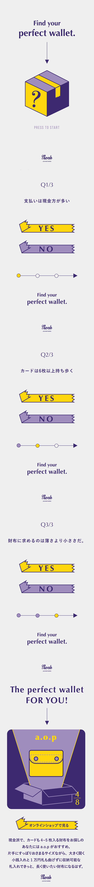

（つくったもの）


-
（概要）
自社レザーブランドの購入検討者向けに、お財布タイプを診断できるWebページを制作。
3つの質問に答えるだけで、ライフスタイルに合った財布を提案する仕組み。 -

-
（課題）
商品が多く、自分に合う財布を見つけにくい点が課題。自分に合う財布を楽しく見つけられる仕組みを作ってほしい。
-
-
（デザイン）
-
モバイルファーストのデザイン設計
スマホでの操作を前提に、シンプルで見やすい画面構成に。
プログレスバーで進行度を可視化し、短い診断でも達成感を感じられる設計にした。 -
診断を楽しめるシンプルなUI
Yes／No形式のボタンを大きく配置し、迷わず直感的に選べる設計に。
ゲーム感覚で答えられるよう、軽やかな動きや余白も意識した。 -
結果からスムーズに購入へ繋がる導線
診断結果ページにはおすすめ財布と購入リンクを自然に配置。
ユーザーが流れのままオンラインショップへ進める構成にした。
-
